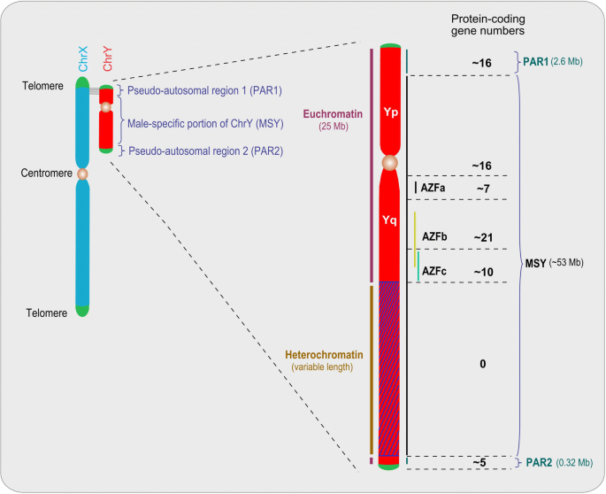

Simulación evolutiva
La matriz física y esta representación digital muestran un modelo conceptual de la cantidad relativa de material genético ancestral conservado.
Modelo histórico
Línea temporal
Velocidad
Explora el futuro
La evolución futura del cromosoma Y no puede conocerse con certeza. Compara dos escenarios.
Escenario A — Estabilización
El conjunto reducido de genes conservados continúa manteniéndose.
Escenario B — Pérdida continua
El modelo hipotético supone que continúa la pérdida de material genético.
Modelo conceptual
La gráfica representa una tendencia conceptual. No constituye una predicción cuantitativa del futuro del cromosoma Y.
¿Qué sabemos realmente?

De ADN a cromosoma
ADN
La molécula que almacena información genética.
↓ Gen
Una región de ADN con información funcional.
↓ Cromosoma
Una estructura organizada que contiene ADN.
↓ X / Y
Cromosomas sexuales presentes en el sistema sexual XY humano.
¿El cromosoma Y está muriendo?
El cromosoma Y sufrió una pérdida importante de genes durante su evolución. Sin embargo, estudios comparativos muestran que gran parte de los genes ancestrales presentes en los estratos más antiguos se ha conservado durante aproximadamente los últimos 25 millones de años.
Por eso no es correcto representar su evolución como una línea recta que inevitablemente termina en cero.
Entonces, ¿qué ocurrirá?
Sabemos
El Y ha perdido muchos genes durante su evolución.
También sabemos
Una parte importante de sus genes se ha conservado durante millones de años.
No sabemos
Si el cromosoma Y humano permanecerá estable indefinidamente o experimentará cambios importantes en el futuro.